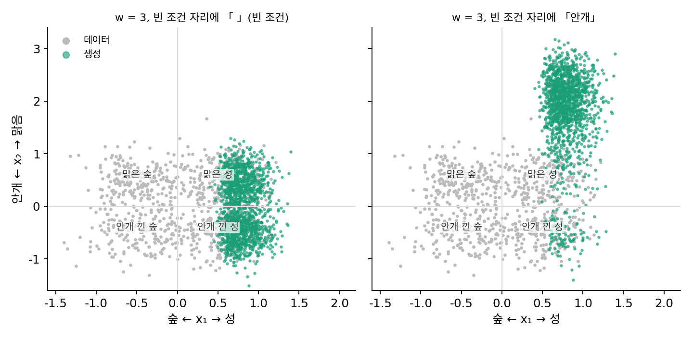

부정 프롬프트: 빈 조건 자리에 피할 것을 넣는다
분류기 없는 가이던스의 식은 「빈 조건으로 읽은 예측에서 조건으로 읽은 예측 쪽으로」 배율만큼 간다. 빈 조건 자리에 꼭 아무것도 아닌 것을 넣어야 할까? ComfyUI 마디의 negative 입력은 바로 그 자리로 들어간다. 그 자리에 「안개」를 넣으면, 그림은 안개 낀 그림에서 멀어지는 쪽으로도 밀릴까?
역사: 빈 문자열 대신 사용자의 글
부정 프롬프트는 논문보다 사용자 도구에서 먼저 퍼졌다. 2022년 Stable Diffusion이 공개된 뒤 사용자들이 널리 쓴 도구 AUTOMATIC1111 웹 UI의 설명서(위키)는 이 기능을 「조건 없는 자리(unconditional_conditioning)에 빈 문자열 대신 사용자가 정한 글을 넣는 것」이라고 설명하고, 성 사진 프롬프트에 「fog」「grainy」 같은 글을 넣어 보이는 예를 든다. 누가 처음 생각했는지는 확인하지 못했다. 호와 샐리먼스는 논문 끝에서 가이던스가 「조건 없는 우도를 낮추고 조건부 우도를 높인다」고, 곧 조건 없는 쪽을 음의 바늘로 밀어낸다고 해석했다. 빈 조건 자리에 다른 글을 넣으면 밀어내는 대상이 그 글이 된다.
성과 숲, 맑음과 안개
빈 조건과 부정 프롬프트가 달라지려면, 프롬프트가 정하지 않은 성질이 하나 더 있어야 한다. 그래서 그림을 숫자 둘로 줄인다. x₁은 숲(−0.5)인지 성(+0.5)인지, x₂는 안개(−0.5)인지 맑음(+0.5)인지를 나타내고, 맑은 성·안개 낀 성·맑은 숲·안개 낀 숲 네 무리가 같은 비중으로 흩어져 있다(표준편차 0.3). 프롬프트 c⁺는 「성」이다. 「성」은 안개를 말하지 않으므로, 빈 조건으로 w = 3을 걸면 맑은 성과 안개 낀 성이 50.0%씩 나온다. 빈 조건 자리 c⁻에 「안개」를 넣으면 다음과 같다.
w = 3에서 맑은 성이 93.0%, 안개 낀 성이 7.0%가 된다. 프롬프트에 「맑은」을 쓰지 않았는데도 안개에서 멀어지는 쪽으로 밀린 것이다. 대신 밀리는 세기도 배율을 따른다. 안개·맑음 축 x₂의 평균이 1.814로 데이터의 맑음(0.5)을 멀리 지나가고, 생성한 점의 90.4%가 데이터가 있는 네모(두 좌표 모두 ±1 안) 밖에 있다. 이처럼 빈 조건 자리에 피하고 싶은 글을 넣어, 그 글로 읽은 예측에서 멀어지게 하는 것을 부정 프롬프트 (빈 조건 대신 넣는 피할 글 / negative prompt)라 한다.

ML에서: 겹치는 글과 여러 조건
부정 프롬프트는 빈 조건과 같은 신경망 호출 한 번이라 시간이 더 들지 않는다. ComfyUI의 KSampler에서 negative에 연결한 조건이 그대로 cfg_function 의 조건 없는 예측 자리로 간다. 프롬프트와 부정 프롬프트가 겹치는 내용을 담으면 문제가 생긴다. 아르만드푸르(Mohammadreza Armandpour)와 동료들(2023)은 지금의 부정 프롬프트가 「주 프롬프트와 부정 프롬프트가 겹칠 때 원하는 결과를 내지 못한다」고 지적하고, 빈 조건, 프롬프트, 부정 프롬프트를 모두 읽은 뒤 「부정 프롬프트 − 빈 조건」의 차이에서 「프롬프트 − 빈 조건」과 나란한 성분을 빼고, 수직인 성분만 밀어내는 Perp-Neg를 내놓았다(ComfyUI comfy_extras/nodes_perpneg.py). 걸음마다 세 번 읽는 대신, 겹치는 내용 때문에 프롬프트까지 밀어내는 일을 막는다.
여러 조건을 따로 계산해 곱하도록 만든 방법도 있다. 2022년 리우(Nan Liu)와 동료들의 합성 디퓨전(Composable Diffusion)은 「A AND B」를 p(x) × p(A ∣ x) × p(B ∣ x)에 비례하는 분포로 정의하고, 두 조건이 그림을 두고 서로 독립이라고 가정해 이 곱을 계산한다. 바늘로 적으면 조건 없는 바늘에 「A − 빈 조건」과 「B − 빈 조건」 두 차이를 더하는 것이다. 장난감에서 「성」과 「맑음」을 이렇게 합치면 배율 1에서도 맑은 성이 87.5%다.
문제 10. 무거운 코트는 빼고
온라인 쇼핑몰에서 「긴 코트」를 찾는데 「무거운 것」은 피하고 싶다. 코트 셋의 (긴 코트다움, 무거움) 점수가 A (8, 7), B (7, 2), C (5, 1)이다. 쇼핑몰은 「무거움 + 세기 × (긴 코트다움 − 무거움)」이 큰 순서로 늘어놓는다. (가) 세기 3이면 순서는? (나) 세기 1이면? (다) 세기 0이면?

(가)는 A가 7 + 3 × 1 = 10, B가 2 + 3 × 5 = 17, C가 1 + 3 × 4 = 13이라 B, C, A예요. (나)도 무거운 걸 빼 주니까 B가 1등이겠죠.

세기 1을 식에 넣어 볼까요?

무거움 + 1 × (긴 코트다움 − 무거움) = 긴 코트다움이에요. 무거움이 지워져서 A(8), B(7), C(5)… 가장 무거운 A가 1등이에요.

(다)는 세기 0이면 무거움 점수만 남으니까 A, B, C. 피하려던 게 1등이 돼.

피할 것을 적어 놔도 세기가 1을 넘어야 비로소 피하는 거네요. 세기 1이면 아예 안 듣고요. 조교님한테 「표절만 빼고 봐 주세요」라고 해도 채점 기준표에 그 항목이 없으면 소용없는 거랑 같아요.
문제 11. 밀어내는 거리
1차원 장난감에서 프롬프트의 분포가 N(0.5, 0.3²), 부정 프롬프트의 분포가 N(−0.5, 0.3²)이다. 부정 프롬프트를 쓴 가이던스는 잡음 0에서 p(x ∣ c⁺)w / p(x ∣ c⁻)w − 1에 비례하는 분포를 겨냥한다. (가) w = 2, 3에서 이 분포의 평균과 표준편차는? (나) 부정 프롬프트의 분포가 N(0.4, 0.3²)로 프롬프트와 가깝다면 w = 3에서 평균은? (다) 부정 프롬프트가 프롬프트와 같다면?
분모가 있으니까 퍼짐이 이상해질 것 같은데요. 일단 지수를 정리하면 −w(x − 0.5)²/(2 · 0.09) + (w − 1)(x + 0.5)²/(2 · 0.09)예요.

x²의 계수를 보면 −w + (w − 1) = −1이라, 분산은 언제나 0.3²이야. 퍼짐은 그대로고 평균만 움직여. 일차항에서 평균이 0.5w + 0.5(w − 1), 곧 0.5 + (w − 1) × 1이야. 1은 두 분포의 평균 거리고.

그럼 w = 2면 평균 1.5, w = 3이면 2.5예요. 표준편차는 0.3 그대로고요. 프롬프트 분포의 평균 0.5를 한참 지나갔어요.

(나)와 (다)는 두 분포가 가까워지는 경우예요.

같은 식이면 평균은 0.5 + (w − 1) × (0.5 − 0.4)라 w = 3에서 0.7이에요. (다)는 거리가 0이니 배율이 얼마든 0.5, 프롬프트 분포 그대로고요. 밀어내는 거리는 「배율 − 1」 × 「두 분포가 떨어진 거리」네요. 피할 것이 멀리 있을수록 세게, 프롬프트와 같으면 전혀 밀지 않아요.

「작년 발표처럼만 하지 마」라는 말을 세게 들으면, 작년 발표와 다를수록 좋다고 생각해서 엉뚱한 데까지 가는 거랑 같네요.
문제 12. 2차원 장난감에서 확인하기
위 2차원 장난감(성/숲 × 맑음/안개, 프롬프트 「성」)에서 (가) w = 1에 부정 프롬프트 「안개」를 넣으면 맑은 성과 안개 낀 성의 몫은? (나) w = 8에 부정 프롬프트로 「성」을 넣으면? (다) w = 8에 「안개」를 넣으면 맑은 성의 몫과 x₂의 평균은? (위젯 2의 「문제 12」 단추로 불러올 수 있다.)
(가)는 안개를 빼 달라고 했으니까 맑은 성이 많겠죠.

코트 문제에서 세기 1이면 피할 게 지워졌잖아. 여기도 w = 1이면 x̂₀(c⁺)만 남을 텐데.
돌려 보니 맑은 성 46.7%, 안개 낀 성 46.8%예요. 숲도 3.3%, 3.2%씩 있고요. 빈 조건으로 w = 1을 건 것과 똑같아요. (나)도 프롬프트와 같은 걸 넣었더니 w = 8인데도 똑같이 46.7%예요.
(다)는요?
맑은 성이 99.9%예요! 그런데 x₂의 평균이 6.682예요. 데이터의 맑음은 0.5였는데요. 점이 전부 네모 밖이에요.
앞 문제의 식으로 보면 x₂ 축에서는 「맑음 또는 안개를 반반 가진 성」에서 「안개」 쪽을 밀어내는 거라, 배율 − 1 = 7만큼 계속 밀려. 잡음이 짙을 때 두 예측의 차이가 크게 잡히니까 더 멀리 간 것 같아요.

부정 프롬프트는 피할 것을 지워 주는 지우개가 아니라, 같은 배율로 반대쪽에서 미는 손이에요. 배율이 크면 그 손도 세져요.
「졸지 마」를 일곱 배로 강조하면 수업 내내 눈을 부릅뜨고만 있는 거네요.